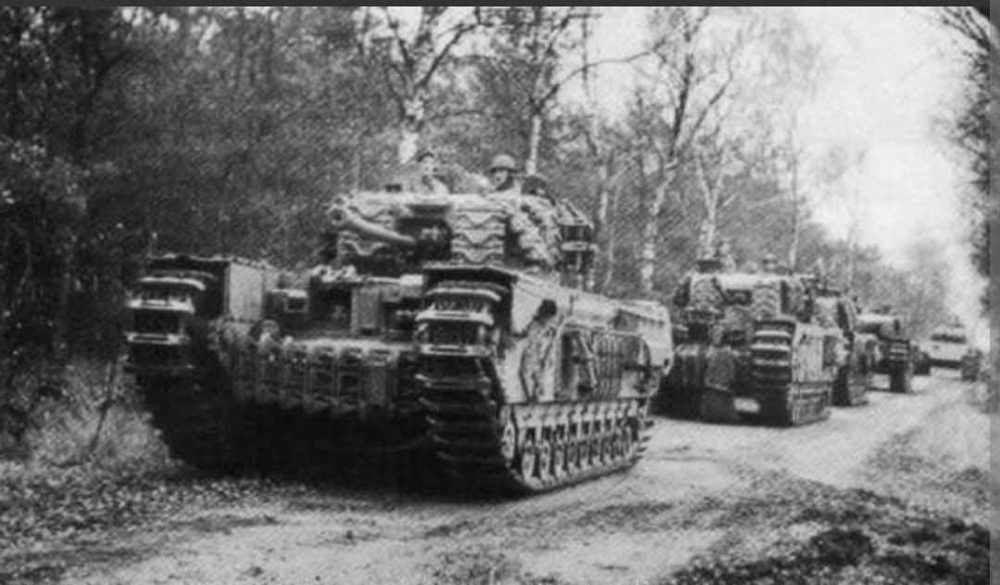
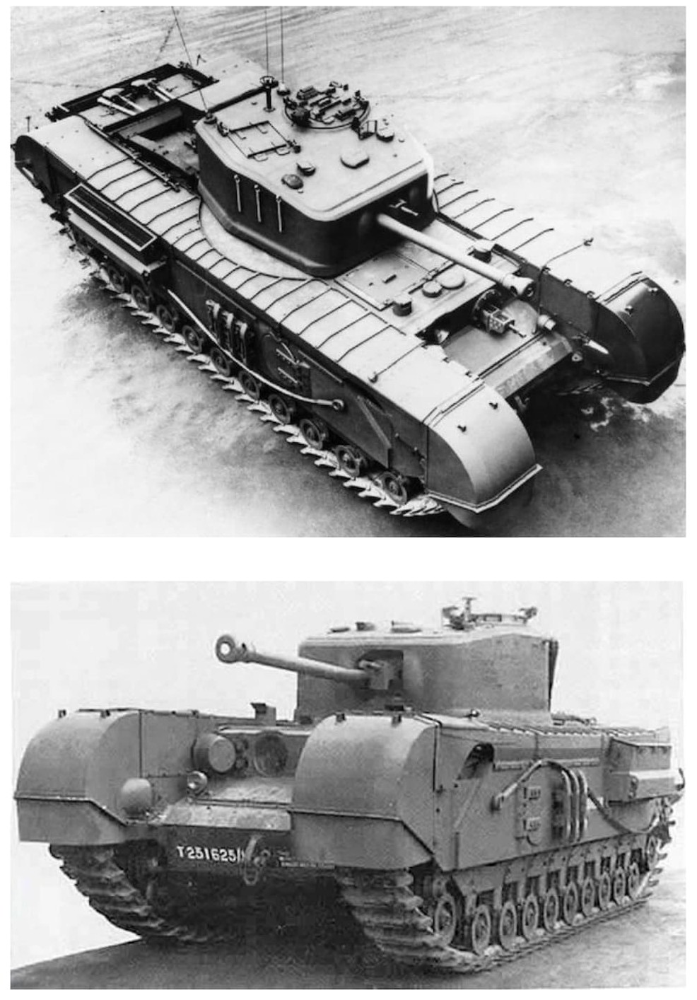
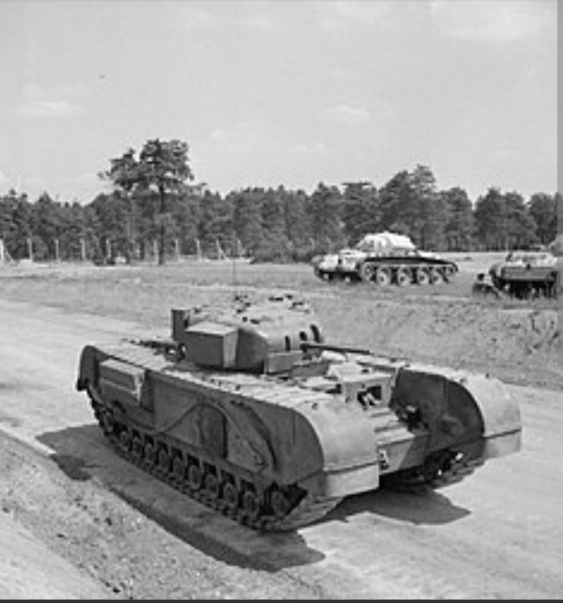

Le colosse blindé britannique capable de franchir les terrains les plus escarpés

Le **Churchill** (désignation officielle Infantry Tank Mk IV, A22) est le char d'infanterie lourd emblématique du Royaume-Uni durant la Seconde Guerre mondiale.
Nommé en l'honneur du Premier ministre Winston Churchill, ce blindé massif se caractérisait par un blindage d'une épaisseur exceptionnelle et une capacité de franchissement tout-terrain hors du commun, lui permettant de gravir des pentes jugées impassables pour d'autres chars.
Conçu en urgence par la firme **Vauxhall Motors** après la défaite de Dunkerque en 1940, le Churchill reprenait une silhouette allongée avec des chenilles enveloppantes rappelant les chars de la Première Guerre mondiale. D'une masse de **39 à 41 tonnes** selon les versions, il était propulsé par un moteur Bedford Twin-Six de 350 chevaux.
Sa vitesse maximale sur route dépassait rarement **24 km/h**, mais son blindage frontal impressionnant variait de **102 mm** sur les premières versions jusqu'à **152 mm** sur la version Mk VII (surclassant sur ce point le char Tiger I allemand). Son armement évolua du canon 2-pounder initial vers un canon **6-pounder (57 mm)** puis un canon de **75 mm QF**.

Le Churchill effectua son baptême du feu tragique lors du **Raid de Dieppe** en août 1942 (Opération Jubilee), où la majorité des véhicules furent piégés sur les galets de la plage. Cependant, les enseignements tirés permirent de fiabiliser le véhicule.
En Tunisie (1943), le Churchill s'illustra en grimpant les hauteurs rocheuses du Djebel Bou Aoukaz. Il fut ensuite largement engagé durant la **campagne d'Italie** et lors de la **bataille de Normandie**, où sa capacité à encaisser les tirs directs en fit un soutien indispensable pour l'infanterie dans le bocage et lors du franchissement de la ligne Siegfried.

Grâce à son châssis spacieux et extrêmement solide, le Churchill servit de base privilégiée pour les blindés spécialisés de la 79e Division Blindée britannique (les célèbres *Hobart's Funnies*) :
Page du Musée HOP WW2 – Section Véhicules Terrestres Britanniques